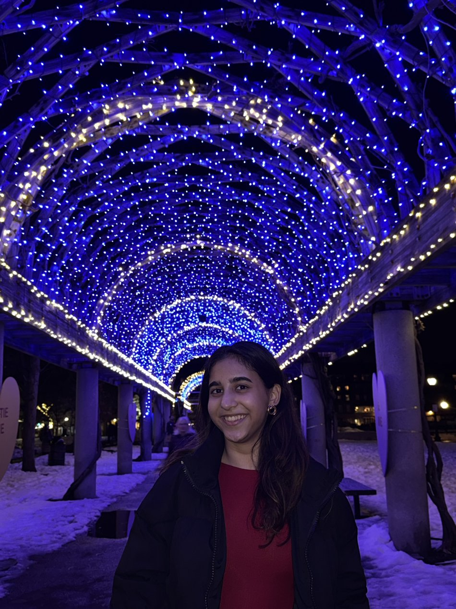

Janhavi
Beley.
Undergraduate Researcher · Data Science & AI
I work on computer vision in biomedical research and on evaluating the evidence used by AI research assistants.
Simmons University · Graduating May 2027
About me.

I study Data Science and AI at Simmons University, graduating in May 2027.
At the Luth Lab, I work on computer vision methods for analysing C. elegans movement in Parkinson’s disease research. Through Break Through Tech AI Studio, I contribute to a KPMG-sponsored research intelligence project, focusing on retrieval and answer evaluation.
I'm interested in applied AI, particularly machine learning, human–AI interaction and agentic AI. I'm also interested in how people assess the evidence behind AI systems and decide when to trust their outputs.
Data Science & AI · May 2027
Research methods, retrieval and evidence
Experience.
Research, industry projects and teaching.
Selected work.
A closer look at the problems, methods and contributions behind my projects.
Recognition.
Presentations, scholarships and research programmes.
Writing & notes.
Articles on research, technology and experiences worth sharing.
Get in
touch.
I'm interested in AI research, computer vision, machine learning and the way people interact with intelligent systems. If these topics interest you too, I'd love to connect and have a chat.